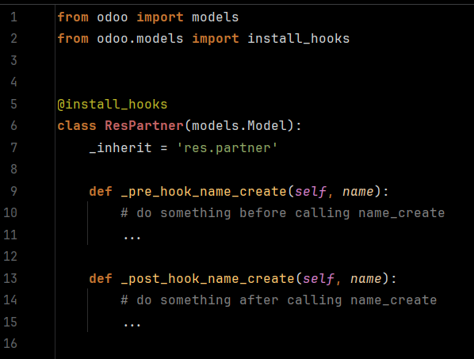

Looking for a skilled and reliable Odoo Developer to bring your business ideas to life? or to fix things? or to analyze unwanted results? or to do whatever in odoo
Let’s build something great together! I specialize in custom module development, ERP implementation, and performance tuning tailored to your needs.
This module introduces a custom hook system for Odoo models, allowing developers to cleanly inject pre/post logic into existing methods, including normal methods, onchange, compute, and more, without overriding via super().
By using @install_hooks, developers can attach logic directly to model functions, making code more modular, maintainable, and less prone to errors caused by traditional super() chains.
_pre_hook_<method> and _post_hook_<method> to execute before/after any model method.super() patterns in favor of isolated, hook-based injections.onchange methods, and more.@install_hooks, keeping code decoupled and readable.from odoo import models
from odoo.tools import install_hooks
@install_hooks
class ResPartner(models.Model):
_inherit = 'res.partner'
def _pre_hook_name_create(self, name):
# do something before calling name_create
...
def _post_hook_name_create(self, name):
# do something after calling name_create
...